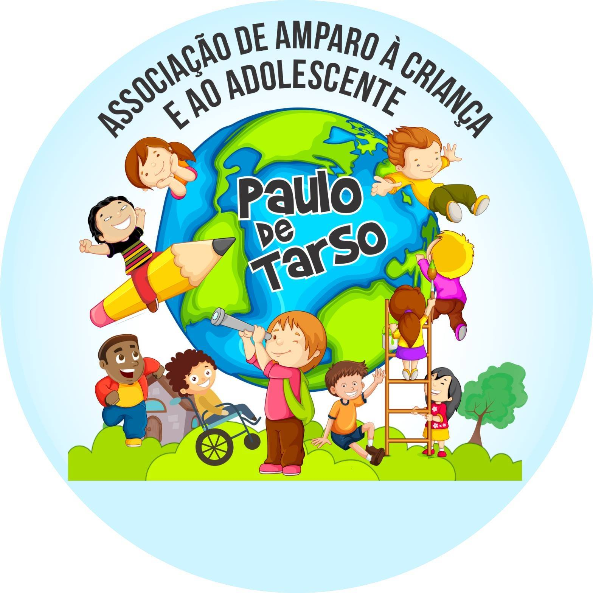

Ano do Voluntariado
O que é voluntariado?
Voluntariado é dedicar tempo e atitude para ajudar outras pessoas ou o ambiente sem receber pagamento. É um compromisso com o bem-estar coletivo e com a transformação da sociedade.
2026 e os Objetivos de Desenvolvimento Sustentável
O ano de 2026 é reconhecido como Ano Internacional dos Voluntários para o Desenvolvimento Sustentável. Ele celebra o papel dos voluntários em ações ambientais, educacionais e sociais, como as que vamos desenvolver na escola.
Tema da causa escolhida
Problema social abordado
A falta de consciência ambiental em escolas e bairros gera desperdício de recursos, descarte incorreto de resíduos e pouco cuidado com os espaços coletivos.
Quem será ajudado
Estudantes, professores, funcionários e famílias da Escola Paulo de Tarso, além da comunidade vizinha que será impactada por um ambiente mais limpo e sustentável.
Dados e informações
- Mais de 50% dos resíduos urbanos poderiam ser reciclados ou compostados.
- Escolas com projetos ambientais reduzem o lixo em até 40% no campus.
- Educação ambiental melhora a colaboração e o respeito pelo espaço coletivo.
Curiosidades
- Uma horta escolar pode ser feita em vasos, canteiros ou jardineiras com fácil manutenção.
- Separar lixo e usar menos plástico ajuda a economizar água e energia.
- Plantar árvores e hortas melhora o clima e a disposição dos alunos.

Projeto concreto
Nome do projeto
Paulo de Tarso Verde e Solidário
O que será realizado
Mutirão de limpeza, coleta seletiva, oficina de reciclagem, construção de compostagem e plantio de uma horta pedagógica dentro da escola.
Onde vai acontecer
Escola Paulo de Tarso e áreas externas próximas, como pátio, corredores e jardim da escola.
Dia e horário
Sábado, 20 de setembro de 2026
08:00 às 12:00 e 13:00 às 16:00
O que os voluntários farão na prática
- Organizar a coleta seletiva e separar materiais recicláveis.
- Montar e cuidar de canteiros para a horta escolar.
- Participar de oficinas de compostagem e reciclagem criativa.
- Orientar colegas e visitantes sobre hábitos sustentáveis.
Inscrição de voluntário
Inscrições salvas: 0
Quiz de conhecimento
Desenvolvedor do site
Júlio Alonso
Nome do aluno: Júlio Alonso
Turma: 2° Médio Tec
Tecnologias usadas: HTML, CSS e JavaScript puro
GitHub: github.com/BUGU1515
Sobre o desenvolvimento
Este site foi desenvolvido por Júlio Alonso como projeto escolar para a Escola Paulo de Tarso. Implementado com HTML, CSS e JavaScript puro, inclui personalizações visuais na paleta da escola (laranja, branco e azul), imagens representativas (incluindo imagem gerada por IA) e uso de localStorage para salvar inscrições de voluntários e o contador de participantes.